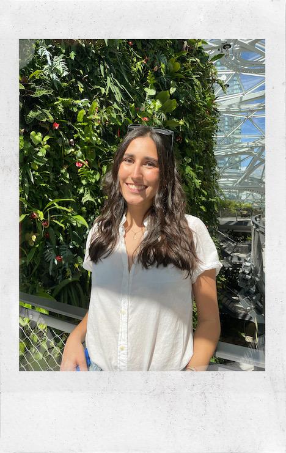
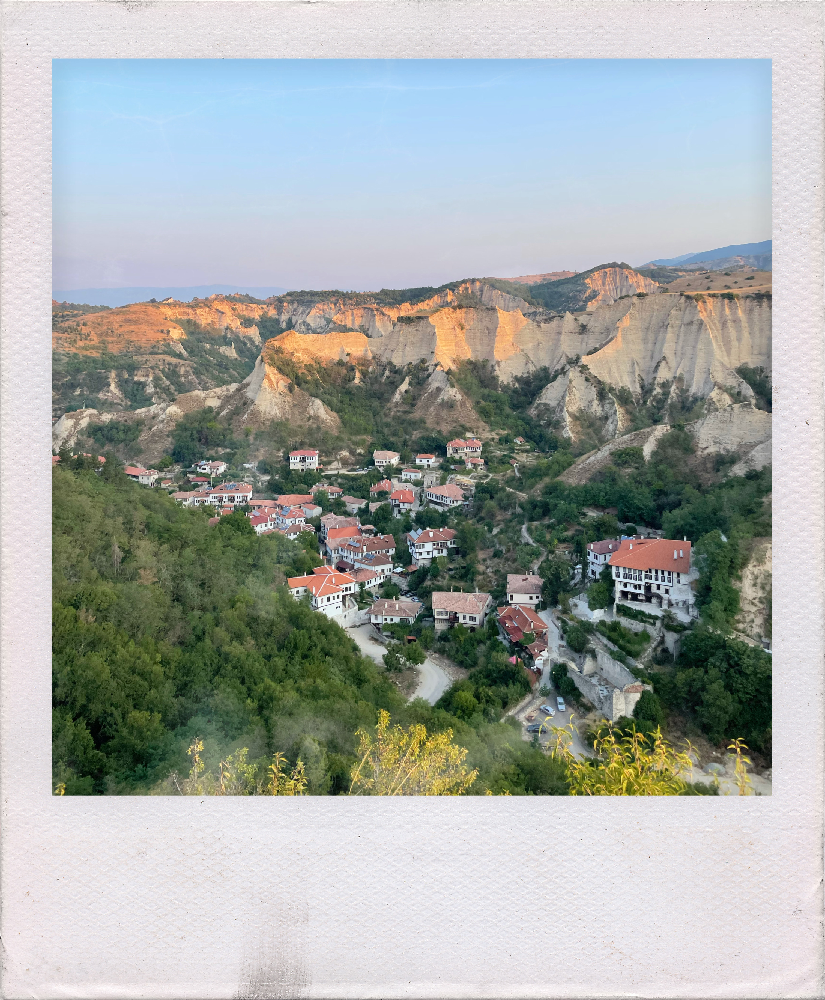

Ivana Karcelova
Hi! 👋🏻 Allow me to introduce myself!

My name is Ivana Karcelova, I'm 19 years old, and I'm Bulgarian! 🇧🇬
I graduated from Rutgers Preparatory School in 2020 🎓, and I currently
study at Tufts University, majoring in Computer Science! 👩🏻💻
I grew up in New Jersey, but I spend my summers visiting my family
in Bulgaria.
Something no one knows about me is that I was in a Ad Council PSA campaign
to help promote the computer science education for girls! Check it out:
https://www.youtube.com/watch?v=WE1r0vY95fU
My favorite place is actually Melnik, Bulgaria. It's the smallest
village in all of Bulgaria, but holds so much history. Here's a
a picture of it:

My IP Address: 62.182.99.87
Name one advantage to using github and one advantage to using the cpanel hosting.
Which of the types of hosting do you prefer and why?
I prefer Github hosting because it seems more organized
What was the most satisfying part of this assignment?
Seeing the completed product! I loved playing around with the CSS aspect of this
assignment and making it more creative. I can't wait to learn more about how to
stylize my websites in the future!